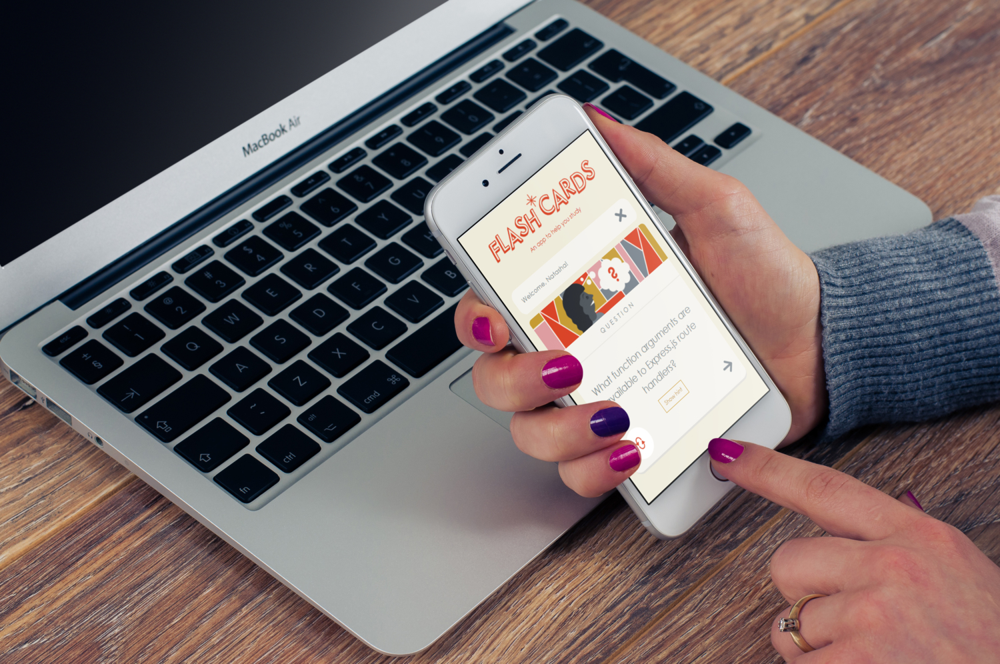
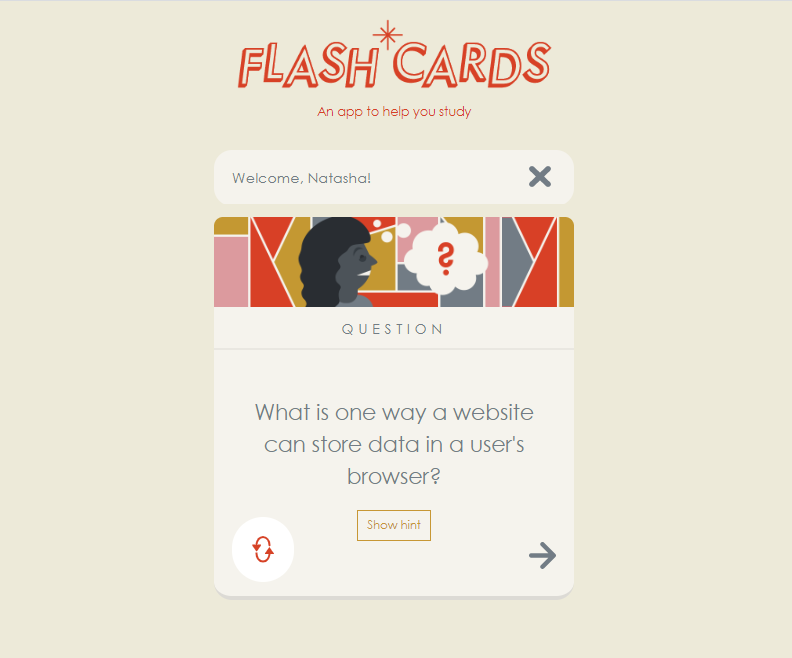
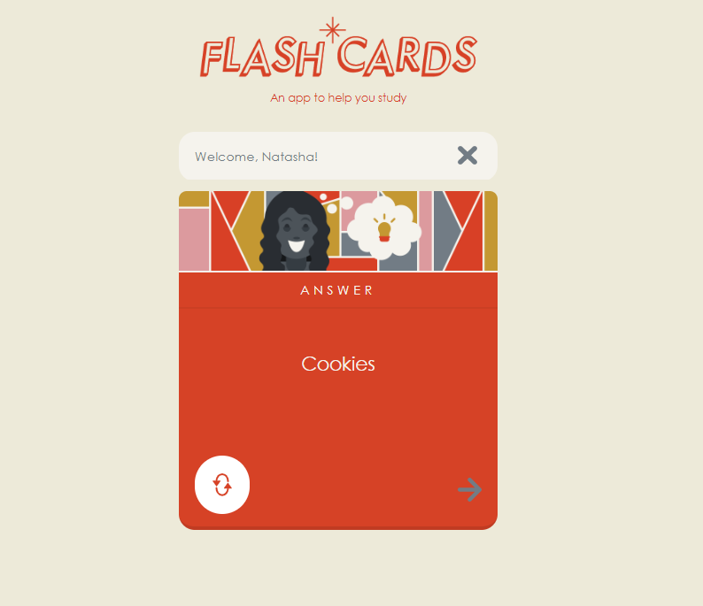

study aid for back-end development
I used Express to build a responsive and personalized flashcard application. The app accepts the name of the user and it greets them. From the homepage you can launch a flashcard study session, the app will give you cards in random order. You can view a hint to help you recall the right answer.
You can flip the card front to back and back again. Clicking Next shows the next card. Finally, a user can clear their name from the site.
Technologies and coding skills I used while working on this project:
This project is online at Flash Cards App
View GitHub repository at GitHub